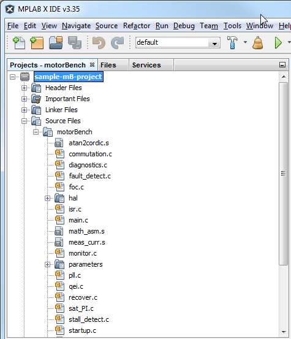
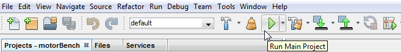

2. Getting Started¶
To get started with the Motor Control Application Framework, follow the directions given in the release notes for motorBench® Development Suite. This will walk you through these steps:
- entering configuration information
- self-commissioning to identify motor parameters
- autotuning to compute controller gains
- file generation to produce source code
At this point, your MPLAB® X project will now contain code generated from the Motor Control Application Framework, and you can browse these files in the Header Files and Source Files folders in the project:

You can now click on the “Run Main Project” (play) button on the MPLAB® X toolbar to build the project and program the device:
